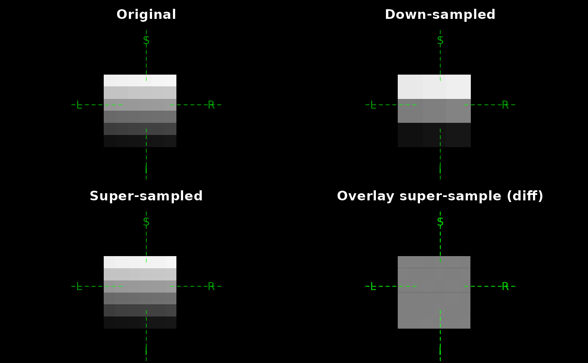
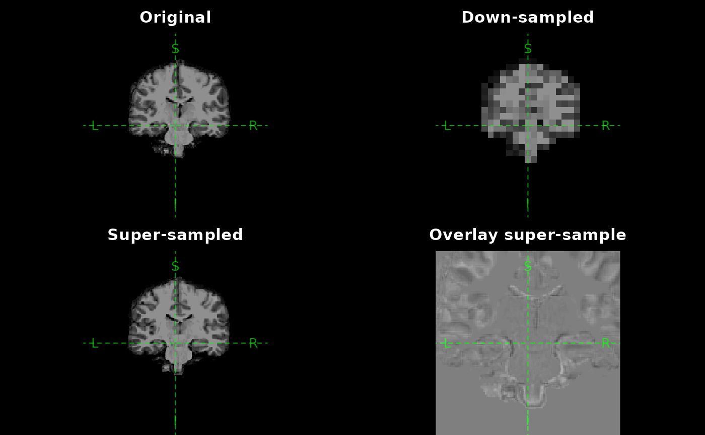

Using nearest-neighbor.
Examples
# ---- Toy example ----------------------------
dm <- c(6, 6, 6)
arr <- array(seq_len(prod(dm)) + 0.5, dm)
orig <- as_ieegio_volume(
arr, vox2ras = cbind(diag(1, nrow = 4, ncol = 3), c(-dm / 2, 1)))
# resample
downsampled <- resample_volume(orig, new_dim = c(3, 3, 3))
dim(downsampled)
#> [1] 3 3 3
# up-sample on coronal
upsampled <- resample_volume(orig, new_dim = c(20, 20, 24))
dim(upsampled)
#> [1] 20 20 24
par(mfrow = c(2, 2), mar = c(0, 0, 2.1, 0.1))
plot(orig, pixel_width = 0.5, zoom = 20, main = "Original")
plot(downsampled, pixel_width = 0.5, zoom = 20, main = "Down-sampled")
plot(upsampled, pixel_width = 0.5, zoom = 20, main = "Super-sampled")
plot(
orig,
main = "Overlay super-sample (diff)",
col = c("black", "white"),
pixel_width = 0.5, zoom = 20
)
plot(
upsampled,
add = TRUE,
col = c("white", "black"),
pixel_width = 0.5, zoom = 20,
alpha = 0.5
)

# ---- Real example ---------------------------
nifti_file <- "brain.demosubject.nii.gz"
if( ieegio_sample_data(nifti_file, test = TRUE) ) {
orig <- read_volume(ieegio_sample_data(nifti_file))
dim(orig)
# resample
downsampled <- resample_volume(orig, new_dim = c(30, 30, 30))
dim(downsampled)
# up-sample on coronal
upsampled <- resample_volume(orig, new_dim = c(300, 300, 64))
dim(upsampled)
par(mfrow = c(2, 2), mar = c(0, 0, 2.1, 0.1))
plot(orig, main = "Original")
plot(downsampled, main = "Down-sampled")
plot(upsampled, main = "Super-sampled")
plot(
orig,
main = "Overlay super-sample",
col = c("black", "white"),
zoom = 2,
vlim = c(0, 255)
)
plot(
upsampled,
add = TRUE,
col = c("white", "black"),
zoom = 2,
alpha = 0.5,
vlim = c(0, 255)
)
}
